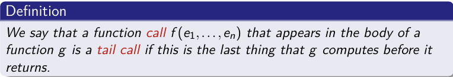
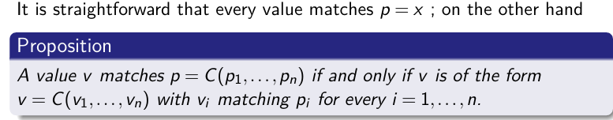
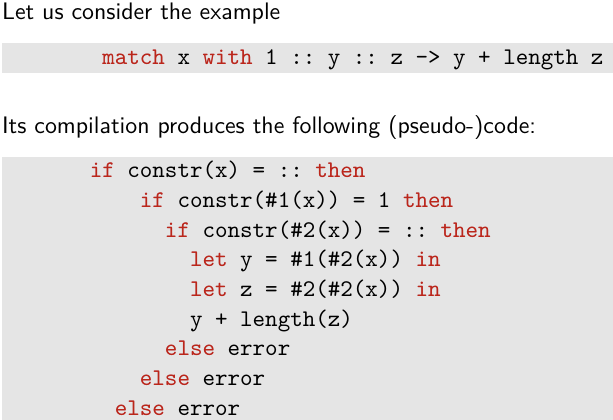
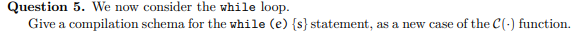
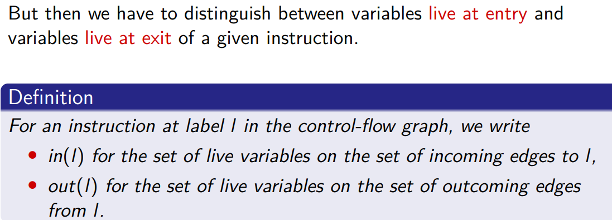

.data
# Descriptor for Graphical (no superclass)
descr_Graphical:
.quad 0 # “null” superclass
.quad Graphical_move # Graphical::move(int,int)
.quad Graphical_draw # Graphical::draw()
# Descriptor for Rectangle extends Graphical
descr_Rectangle:
.quad descr_Graphical # pointer to Graphical’s descriptor
.quad Graphical_move # inherits move(int,int) with no override
.quad Rectangle_draw # overrides draw()
# Descriptor for Circle extends Graphical (but does not override move(int,int))
descr_Circle:
.quad descr_Graphical # pointer to Graphical’s descriptor
.quad Graphical_move # still uses Graphical::move(int,int)
.quad Circle_draw # overrides draw()
.quad Circle_move # new zero-arg method Circle.move()


Uma boa maneira de compilar closures é em dois passos:
Cada função tem um único argumento, passado no registo %rdi, O closure é passado no registo %rsi.
O stack frame é o seguinte, onde v1,...,vm são as variáveis locais:
Goal - Transform all function values into explicit closures (pairs of code pointers and their environment), to make all free variables visible at runtime, as required by low-level implementation.
Steps (direct from lectures & solved examples):
Identify all function values (lambdas, partial applications, recursive fns).
Compute free variables for each function (fv(e) formula).


Pattern Matching - Build matrix, check first column, variable = let, else case split by constr, recur.

Apresentar a matriz da expressão (M):

Algorithm Structure (from class/lectures): Given a matrix with patterns in the first column:
If all entries are variable patterns (not the case here), use let to bind variable and continue to the next column.
If there are constructor patterns:


Para compilar clos f [y1,..., yn] fazemos o seguinte:
Nota: a dealocação do bloco é feita pelo garbage collector.
Para compilar e1 e2, fazemos:
call *%rsi isto é um jump para um endereço dinamico.Para compilar o acesso à variável x, distinguimos os 4 casos:
Para compilar a declaração letfun f [y1,..., yn] x = e, fazemos:
ret para retornar o valor no registo %rax
A tail call é uma chamada de função que é a última ação de uma função, ou seja, não há mais código a ser executado após a chamada.
Nós podemos apagar o stack frame da função que faz a tail call antes de fazer a chamada, porque não precisamos mais dele.
Melhor, podemos reutilizar para fazer a tail call, em particular o endereço de retorno. Ou seja, podemos fazer um jump em vez de um call.
match x with p1 -> e1 | ... | pn -> en, onde pi são padrões e ei são expressões.





movq $42, %rdi
movq %rdi, -8(%rbp)
movq -8(%rbp), %rdi
testq %rdi, %rdi
jz L_else
movq -8(%rbp), %rdi
pushq %rdi
movq $10, %rdi
movq %rdi, %rsi
popq %rdi
addq %rsi, %rdi
movq %rdi, -16(%rbp)
jmp L_end
L_else:
movq -8(%rbp), %rdi
pushq %rdi
movq $2, %rdi
movq %rdi, %rsi
popq %rdi
addq %rsi, %rdi
movq %rdi, -24(%rbp)
L_end:


A. For Loop - for (x := e1; cond; x := e2) { s }
Equivalent to:
x := e1;
while (cond) {
s;
x := e2;
}
Schema:
C(for (x := e1; cond; x := e2) { s }) ≡
C(x := e1)
L_start:
C(cond)
testq %rdi, %rdi
jz L_end
C(s)
C(x := e2)
jmp L_start
L_end:
B. For-Each Over a List
for x in l do s
Equivalent to:
C(for x in l do s) ≡
movq ofs_l(%rbp), %rsi ; start with list in %rsi
L_start:
cmpq $0, %rsi ; test for []
je L_end
movq 0(%rsi), %rdi ; get head (x)
movq %rdi, ofs_x(%rbp) ; store x
C(s)
movq 8(%rsi), %rsi ; move to next node (tail)
jmp L_start
L_end:
0(%rsi): head of cons cell, 8(%rsi): pointer to next node.
ofs_x(%rbp): stack offset for x.
C. Tuple Pattern-Matching
let (x, y) = p in s
Equivalent to:
C(let (x, y) = p in s) ≡
C(p) ; compute tuple, result in %rdi
movq 0(%rdi), %rsi ; first element
movq %rsi, ofs_x(%rbp)
movq 8(%rdi), %rsi ; second element
movq %rsi, ofs_y(%rbp)
C(s)
For triples: also extract 16(%rdi) for z.
Adapt for more elements as needed.
D. Function Definition and Call
Let’s assume a simple convention:
Closures are pointers to code and an environment (you might just store code pointers for simple cases).
Parameters passed in %rdi, return in %rax (or %rdi).
fun f(x) { s }
Equivalent to:
f:
pushq %rbp
movq %rsp, %rbp
... ; allocate locals as needed
; x is passed in %rdi, store to ofs_x(%rbp)
movq %rdi, ofs_x(%rbp)
C(s)
popq %rbp
ret
Function call:
y := f(e)
Equivalent to:
C(e) ; compute argument, result in %rdi
call f
movq %rax, ofs_y(%rbp) ; store result
E. Pattern-Matching Over Lists
Suppose:
match l with
| [] -> s1
| x :: xs -> s2
Schema:
C(l) ; result in %rdi
cmpq $0, %rdi ; test for []
je L_nil ; cons case:
movq 0(%rdi), %rsi ; x = head
movq %rsi, ofs_x(%rbp)
movq 8(%rdi), %rsi ; xs = tail
movq %rsi, ofs_xs(%rbp)
C(s2)
jmp L_end
L_nil:
C(s1)
L_end:

A. Identify Variables and Their Roles #1, #2, ..., #7: pseudo-registers.
Look for initialization, update, and loop conditions.
B. Look for Patterns Initialization: mov 0 #3 means #3 starts at 0 (n := 0)
Loop condition: The ubranch/jnz at L3 uses #4 to decide which label to go to. #4 is set from #1 (mov #1 #4)
Loop body:
mov #1 #5: copy #1 to #5 (preparing for addition)
binop add #5 #3: #3 := #5 + #3 (i.e., n := n + i)
mov #1 #6, mov 1 #7, binop sub #7 #6, mov #6 #1: sequence for i := i - 1
Loop jump: goto L2 (loop back)
After loop: mov #3 #2 (result assignment: r := n)
C. Structure as High-Level Code Initialization before the loop.
Loop condition as the branch.
Loop body: accumulation and decrement.
After loop: assign result.
Find the loop (or conditional) structure:
Repeated jumps, conditional branches, and updates indicate loops.
ubranch or cmp + jz/jnz mean while/if.
Within the loop, find the body:
Look for binop (arithmetic), mov (assignments).
Map to +=, -= etc.
Find what happens after the loop.
Assign meaningful variable names for clarity.
Write the code as if you were the one who wrote it originally, not the compiler!
| RTL Pattern | WHILE/C equivalent | How to spot it |
|---|---|---|
mov 0 #n |
n := 0; |
constant init |
ubranch jnz #v |
while (v != 0) { ... } |
conditional branch/jump |
binop add #a #b |
b := b + a; |
addition |
binop sub #a #b |
b := b - a; |
subtraction |
mov #a #b |
b := a; |
assignment |
goto (back to start) |
(end of while) | loop back |
mov #n #result |
result := n; |
result assignment |
A. Arithmetic For Loop
WHILE/C Code
sum := 0;
for (i := 1; i <= N; i := i + 1) {
sum := sum + i;
}
Corresponding RTL
L1: mov 0 #1 ; sum := 0
L2: mov 1 #2 ; i := 1
L3: mov #2 #3
cmp #3, #N
jg L_end
L4: mov #2 #4
add #1 #4 ; #4 = sum + i
mov #4 #1 ; sum := #4
L5: add 1 #2 ; i := i + 1
jmp L3
L_end:
B. For-Each Loop Over a List
WHILE/C Code
s := 0;
while (l != []) {
s := s + head(l);
l := tail(l);
}
Possible RTL
L1: mov 0 #1 ; s := 0
L2: mov l #2 ; #2 = l
L3: cmp #2, [] ; check if list is empty
je L_end
L4: head #2 #3 ; #3 = head(l)
add #1 #3 ; #3 = s + head(l)
mov #3 #1 ; s := #3
tail #2 #2 ; l := tail(l)
jmp L3
L_end:
C. Pattern-Matching on Tuples
WHILE/C Code
(x, y) := t;
z := x + y;
Possible RTL
L1: mov t #1 ; #1 = t
L2: fst #1 #2 ; #2 = x = first element
L3: snd #1 #3 ; #3 = y = second element
L4: add #2 #3 ; #3 = x + y
L5: mov #3 #4 ; z := #3
D. Function Call (No Closures)
WHILE/C Code
y := f(x);
Possible RTL
L1: mov x #1 ; #1 = x (argument)
L2: call f, #1, #2 ; call f with #1, result in #2
L3: mov #2 #y ; y := #2
E. Pattern-Matching on a List
WHILE/C Code
if (l == []) {
z := 0;
} else {
z := head(l);
}
Possible RTL
L1: mov l #1
cmp #1, []
je L2
L3: head #1 #2
mov #2 #z
jmp L_end
L2: mov 0 #z
L_end:
F. For Loop with Tuple Accumulator
WHILE/C Code
(a, b) := (0, 0);
for (i := 1; i <= N; i := i + 1) {
a := a + i;
b := b + 2 * i;
}
Possible RTL
L1: mov 0 #1 ; a := 0
mov 0 #2 ; b := 0
L2: mov 1 #3 ; i := 1
L3: cmp #3, #N
jg L_end
L4: add #1 #3 ; #1 = a + i
mov #1 #1 ; a := #1
mul 2 #3 ; #4 = 2 * i
add #2 #4 ; #2 = b + (2*i)
mov #2 #2 ; b := #2
add 1 #3 ; i := i + 1
jmp L3
L_end:
A. Perform Liveness Analysis For every instruction, compute which pseudo-registers are live "out" (needed after the instruction).
See lecture for the equations:
in(l) = use(l) ∪ (out(l) \ def(l))
out(l) = ⋃ [in(s) for each successor s]

def(l) = registers written (assigned) in the instruction at label l
use(l) = registers read (used) in the instruction

For each instruction that defines a register v, draw an edge from v to every other register w live in out(l) (except for moves, see below).
B. Special Case: mov Instructions For mov w v, do not create an interference edge between w and v, but instead draw a dashed “preference” edge, meaning it’s preferable (but not necessary) to allocate them to the same register.
L1: mov 0 #3 → L2
L2: mov #1 #4 → L3
L3: ubranch jnz #4 → L4, L11
L4: mov #1 #5 → L5
L5: binop add #5 #3 → L6
L6: mov #1 #6 → L7
L7: mov 1 #7 → L8
L8: binop sub #7 #6 → L9
L9: mov #6 #1 → L10
L10: goto → L2
L11: mov #3 #2 → L12
L12: (end)
| Label | Instruction | Def | Use | Succ |
|---|---|---|---|---|
| L1 | mov 0 #3 | #3 | — | L2 |
| L2 | mov #1 #4 | #4 | #1 | L3 |
| L3 | ubranch jnz #4 | — | #4 | L4, L11 |
| L4 | mov #1 #5 | #5 | #1 | L5 |
| L5 | binop add #5 #3 | #3 | #5, #3 | L6 |
| L6 | mov #1 #6 | #6 | #1 | L7 |
| L7 | mov 1 #7 | #7 | — | L8 |
| L8 | binop sub #7 #6 | #6 | #7, #6 | L9 |
| L9 | mov #6 #1 | #1 | #6 | L10 |
| L10 | goto | — | — | L2 |
| L11 | mov #3 #2 | #2 | #3 | L12 |
| L12 | (end) | — | — | — |
We'll fill this in backwards from L12 to L1.
Initialize: out(L12) = ∅, in(L12) = ∅
| Label | def | use | out | in |
|---|---|---|---|---|
| L12 | — | — | ∅ | ∅ |
| L11 | #2 | #3 | ∅ | {#3} |
| L10 | — | — | {#1, #4} | {#1, #4} |
| L9 | #1 | #6 | {#1, #4} | {#6, #4} |
| L8 | #6 | #7, #6 | {#1, #4} | {#7, #6, #4} |
| L7 | #7 | — | {#7, #6, #4} | {#6, #4} |
| L6 | #6 | #1 | {#7, #6, #4} | {#1, #7, #4} |
| L5 | #3 | #5, #3 | {#1, #7, #4} | {#5, #3, #1, #7, #4} |
| L4 | #5 | #1 | {#5, #3, #1, #7, #4} | {#1, #3, #7, #4} |
| L3 | — | #4 | {#1, #3, #7, #4} ∪ {#3} = {#1, #3, #4, #7} | {#4, #1, #3, #7} |
| L2 | #4 | #1 | {#4, #1, #3, #7} | {#1, #3, #7} |
| L1 | #3 | — | {#1, #3, #7} | {#3, #1, #7} |
Explanation for a couple tricky points:
L10: Successor is L2; in(L2) = {#1, #3, #7}; so out(L10) = {#1, #4} (from path via goto loop).
L3: Successors are L4 (in(L4) = {#1, #3, #7, #4}) and L11 (in(L11) = {#3}). So out(L3) = union = {#1, #3, #4, #7}.
You might find small differences depending on how you resolve union points, but this is the main structure.
L1: mov 0 #3 → L2 def = #3, out = {#1, #3, #7}
mov: add dashed #3--0 (0 is not a pseudo-register, so no effect)
Interference: #3 -- #1, #3 -- #7 (do not do #3--#3).
L2: mov #1 #4 → L3 def = #4, out = {#1, #3, #7}
mov: dashed #1--#4
Interference: #4 -- #3, #4 -- #7 (not #4--#1 because mov)
L3: ubranch jnz #4 → L4, L11 def = none
(no new edges)
L4: mov #1 #5 → L5 def = #5, out = {#1, #3, #7, #4}
mov: dashed #1--#5
Interference: #5 -- #3, #5 -- #7, #5 -- #4
L5: binop add #5 #3 → L6 def = #3, out = {#1, #7, #4}
binop: interference #3 -- #1, #3 -- #7, #3 -- #4
L6: mov #1 #6 → L7 def = #6, out = {#7, #6, #4}
mov: dashed #1--#6
Interference: #6 -- #7, #6 -- #4
L7: mov 1 #7 → L8 def = #7, out = {#7, #6, #4}
mov: dashed #1--#7 (not present, since src is constant)
Interference: #7 -- #6, #7 -- #4
L8: binop sub #7 #6 → L9 def = #6, out = {#1, #4}
binop: #6 -- #1, #6 -- #4
L9: mov #6 #1 → L10 def = #1, out = {#1, #4}
mov: dashed #6--#1
Interference: #1 -- #4
L10: goto → L2 no def, skip.
L11: mov #3 #2 → L12 def = #2, out = ∅
mov: dashed #3--#2
(no out to add interference)
| Operation | Optimized Instruction / Trick |
|---|---|
| x + 1 | incq |
| x - 1 | decq |
| x + 0 | (skip) |
| x - 0 | (skip) |
| x * 0 | xorq reg, reg |
| x * 1 | (skip) |
| x * 2^n | shlq $n, reg |
| x * -1 | negq reg |
| x / 1 | (skip) |
| x / 2^n | sarq $n, reg |
| x := x + y | addq src, dst |
| x := x - y | subq src, dst |